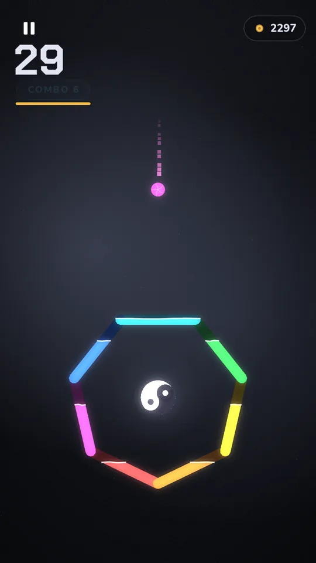
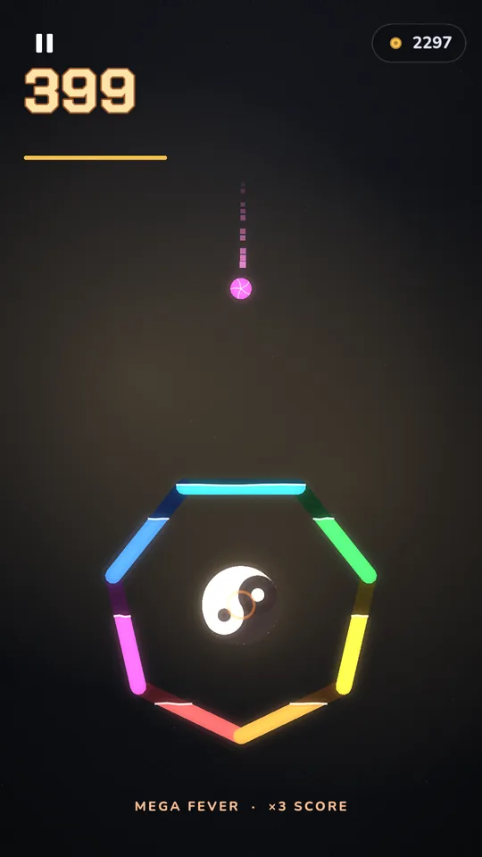
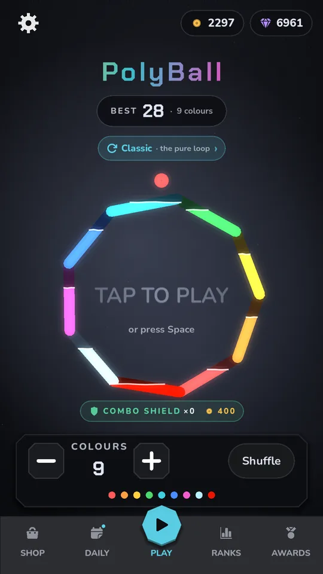
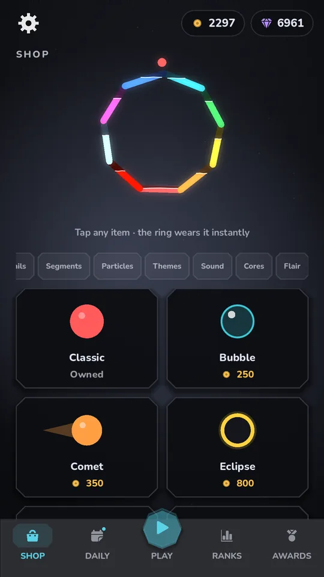
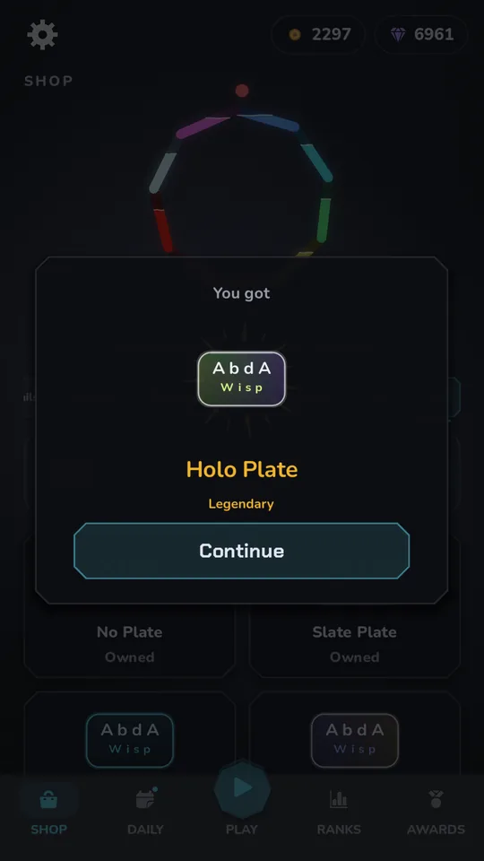

Match the colour
Turn the ring so the ball lands on its own colour.
Free on Android · early access
Every note you hear, you played.
Drop the ball on its own colour. Every catch makes the next one faster. One miss, and only one way back.
Match the colour. Miss once and the run is over.
Free, no account needed. See who you are chasing.
Live board
Real runs, straight from the game.
| Rank | Player | Score |
|---|
Your best run is saved in this browser only.
Classic
Match the colour. Keep up. Don't miss.
Turn the ring so the ball lands on its own colour.
Every catch makes the next drop a little quicker. Your first runs start gentle.
In Classic and the Daily, one wrong colour ends the run. In the other modes it just resets your combo.
Modes
The pure loop. Endless, and it only gets faster.
Perform the song. Balls land on the beat and you play the chord tones.
Beat the clock. Every clean catch buys back seconds.
Just flow. No clock, no leaderboard.
The details
Neighbouring colours always differ in shade as well as hue, and a colour-blind mode adds a shape to every colour.
Every catch plays a note in key, so each run becomes its own song. Keep a combo going and the bass, arp and lead join in. Sixteen sound themes to choose from.
Including Modern Standard and Egyptian Arabic, with a full right-to-left layout.
Text and buttons adjust to whichever background you equip, so everything stays clear.





Downloads
Play on your phone or your computer.
The best way to play. Join the test with your Google account, then install from Play and get updates automatically.
Join the closed test91.1 MB Android 7+ · 64-bit
For sideloading. It can't install over the Play version, so use Play if you can.
Download APK112.4 MB 64-bit
No installer, just run it. If Windows warns you, choose More info, then Run anyway.
Download for Windows78.3 MB 64-bit
Make it runnable first: chmod +x PolyBall-Linux-x86_64.x86_64
63.3 MB Intel and Apple silicon
If macOS blocks it, go to System Settings › Privacy & Security and choose Open Anyway.
Download for macOSNot on iPhone or iPad yet.
All downloads are version 0.9.2.
Ads, purchases and data
Ads show between runs, never during one, plus a banner on the results screen and now and then when you come back to the game. Rewarded ads are always your choice.
You can buy Remove Ads, a starter pack, gems or coins, which buy cosmetics and Combo Shields. A run saved by a shield or an ad revive never counts on the leaderboard. Nothing random is sold for money.
One attempt per day, the same for everyone, and no purchase buys another.
Your saves and settings stay on your device. A new best sends your score, generated name, plate and title to the leaderboard. Anonymous usage stats can be turned off in Settings › DATA. The privacy policy has the full list, and deleting your leaderboard row takes one email.
Names on the board are made up by the game, never typed by players.